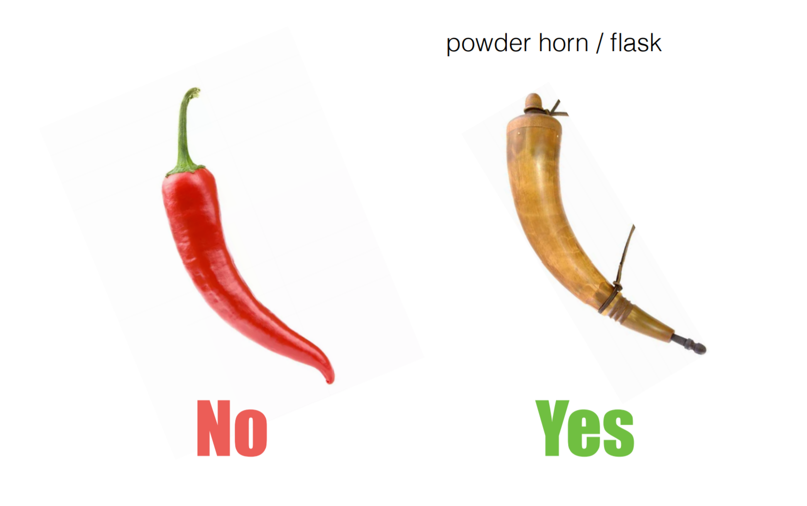

class: center, middle, title <h1>基于 Flask 的 Web API 开发指<span id="blink">南</span></h1> 李辉（Grey Li） 🐍 PyCon China 2019 上海 --- class: center, middle, inverse ## 这本来是一个严肃的演讲 --- ## Flask 是什么？ install ```bash $ pip install flask ``` code (app.py) ```python from flask import Flask app = Flask(__name__) @app.route('/') def hello(): return 'Hello, PyCon China!' ``` run ```bash $ flask run ... * Running on http://127.0.0.1:5000/ (Press CTRL+C to quit) ``` --- ## Web API 是什么？ -- - 长答案：https://lmgtfy.com/?q=what+is+web+api%3F -- - 短答案：可以使用 HTTP 协议进行访问，返回 XML 或 JSON 格式数据的 API -- - 再短一点：JSON over HTTP 或 XML over HTTP -- - 特点： - 使用 HTTP 访问 - 返回 JSON 或 XML 格式的纯数据 - 使用 URL 描述资源 - 使用不同的 HTTP 方法表示不同的操作 --- ## 最简单的 Web API code (app.py) ```python from flask import Flask app = Flask(__name__) @app.route('/') def hello_api(): return {'message': 'Hello, PyCon China!'} ``` --- ## 最简单的 Web API code (app.py) ```python from flask import Flask app = Flask(__name__) @app.route('/') def hello_api(): * return {'message': 'Hello, PyCon China!'} ``` -- test (with `pip install httpie`) ```bash $ http http://localhost:5000 HTTP/1.0 200 OK Content-Length: 30 Content-Type: application/json Date: Tue, 17 Sep 2019 01:10:24 GMT Server: Werkzeug/0.15.6 Python/3.6.8 { "message": "Hello, PyCon China!" } ``` --- ## 李辉 / Grey Li - 独立 Web 开发者 - Flask 维护者之一 - 《Flask Web 开发实战》作者 - [HelloFlask](http://helloflaks.com) 管理员 - 个人网站 [greyli.com](http://greyli.com) --- class: center, middle, inverse # 一个合格的 Python 程序员应该了解的事情 --- class: center, middle # 👀 正确识认 Logo，从我做起 --- class: center, middle --- class: center, middle  --- class: center, middle # 重要的事情讲三遍 --- class: center, middle # 👅 掌握正确的英语发音，从我做起 --- class: center, middle # Werkzeug --- class: center, middle # / (ˈvɛɐ̯kˌtsɔʏ̯k) / (than ke sao yi ke) <br> <audio src="./audios/werkzeug.mp3" controls=""></audio> （发音来自作者本人） --- class: center, middle # Jinja --- class: center, middle # / (ˈdʒɪndʒə) / (jin ja) <br> <audio src="./audios/jinja.mp3" controls=""></audio> --- class: center, middle # Django --- class: center, middle # 低压狗、低简狗、地张狗、地占狗、江狗？ --- class: center, middle # [JANG-oh](https://docs.djangoproject.com/en/dev/faq/general/#what-does-django-mean-and-how-do-you-pronounce-it) (zhan go) <br> <audio src="./audios/django.mp3" controls=""></audio> --- class: center, middle # 🧠 使用正确的术语，从我做起 --- class: center, middle # API / API 接口？ --- class: center, middle # 微服务？ --- class: center, middle # REST API / RESTful API？ --- class: center, middle # Web 服务？ --- class: center, middle # Web API ✔️ --- class: center, middle, inverse # 什么样的 Web API 才是真正的 REST API？ --- ## REST 架构的约束条件 - 客户端-服务器（Client-Server） - 无状态（Stateless） - 缓存（Cacheability） - 分层系统（Layered System） - 按需代码（Code-On-Demand，可选） - 统一接口（Uniform Interface） - 请求中包含资源的 ID（Resource identification in requests） - 资源通过标识来操作（Resource manipulation through representations） - 消息的自我描述性（Self-descriptive messages） - 用超媒体驱动应用状态（Hypermedia as the engine of application state，HATEOAS） --- class: center, middle # 基本没有完全符合 REST 要求的 API --- class: center, middle # 不一定要完全遵守这些约束 --- class: center, middle  --- ## 使用名词表示资源 -- ```bash /token post delete ``` -- vs ```bash /login post /logout post ``` -- whatever. -- （正在面试除外） 🙄 -- ```bash /search ``` --- ## 使用首部描述 API 版本 -- ```http Accept: application/vnd.example.v1+json ``` or ```http Accept-version: v1 ``` -- vs ```bash https://api.example.com/v1/ https://api-v1.example.com/ ``` -- it depends. -- but don't do this: ```bash https://api.example.com/ https://new-api.example.com/ https://latest-api.example.com/ ``` --- class: center, middle # 60% RESTful is ok 🤔 --- class: center, middle # 符合需求、易于实现、易于理解 > 符合标准 --- class: center, middle, inverse # 不一定非要使用扩展来实现 Web API --- class: center, middle # 有一些 Flask 扩展很坑…… --- ## 你以为的坑 <img src="./images/small-hole.jpg" width="600px"> --- ## 实际的坑 --- ## 甚至是这样的坑 --- ## Flask Web API 扩展 - Flask-RESTful - Flask-RESTPlus - Flask-Restless - Flask-API - …… --- class: center, middle # 避免引入不必要的复杂度 --- class: center, middle, inverse # 试试使用 Flask 原生实现 Web API 吧 --- ## 返回 jsonify() 和字典都可以 app ```python flask flask import Flask # jsonify app = Flask(__name__) ``` data ```python data = { 'en': 'Hello', 'zh': '你好', 'jp': 'kong ni ji wa' } ``` return dict (new in 1.1) ```python @app.route('/') def hello_api(): return data # return jsonify(data) ``` --- ## 使用函数和类都可以 view function ```python @app.route('/note/<int:id>', methods=['GET']) def get_note(id): pass @app.route('/note/<int:id>', methods=['DELETE']) def delete_note(id): pass ``` class view ```python from flask.views import MethodView class Note(MethodView): def get(self, note_id): pass def delete(self, note_id): pass app.add_url_rule('/notes/<int:note_id>', view_func=Note.as_view('note'), methods=['GET', 'DELETE']) ``` --- ## 使用蓝本来组织 API 版本 ``` apis/ # app package - v1 - note.py - user.py - v2 - note.py - user.py - __init__.py - models.py - decorators.py - auth.py - errors.py ``` -- ```python from apis.v1 import api_v1 from apis.v2 import api_v2 def create_app() app = Flask(__name__) app.register_blueprint(api_v1, url_prefix='api/v1/') app.register_blueprint(api_v2, url_prefix='api/v2/') return app ``` --- ## 错误处理 ```python from flask import jsonify from werkzeug.http import HTTP_STATUS_CODES def api_abort(code, message=None, **kwargs): if message is None: message = HTTP_STATUS_CODES.get(code, 'Error') response = jsonify(code=code, message=message, **kwargs) response.status_code = code return response # You can also just return (response, code) tuple ``` - 用于主动返回错误响应 - 从 Werkzeug 获取 HTTP 错误的状态码作为错误描述 - 可以自定义错误消息和附加其他数据 --- ## 错误处理 ```python from flask import jsonify from werkzeug.http import HTTP_STATUS_CODES def api_abort(code, message=None, **kwargs): if message is None: * message = HTTP_STATUS_CODES.get(code, 'Error') response = jsonify(code=code, message=message, **kwargs) response.status_code = code return response # You can also just return (response, code) tuple ``` - 用于主动返回错误响应 - 从 Werkzeug 获取 HTTP 错误的状态码作为错误描述 - 可以自定义错误消息和附加其他数据 --- ## 错误处理 usage 1 ```python if g.current_user != item.author: return api_abort(403) ``` usage 2 ```python if user is None or not user.validate_password(password): return api_abort(code=400, message='Either the username or password was invalid.') ``` --- ## 错误处理 usage 3 ```python @app.errorhandler(404) def page_not_found(e): return api_abort(404) @app.errorhandler(405) def method_not_allowed(e): return api_abort(405) @app.errorhandler(500) def internal_server_error(e): return api_abort(500) ``` --- ## JSON 数据封装 ```python def note_schema(note): return { 'id': note.id, 'self': url_for('.note', note_id=note.id, _external=True), 'kind': 'Note', 'body': note.body, 'author': { 'id': 1, 'url': url_for('.user', _external=True), 'username': note.author.username, 'kind': 'User', }, } ``` - 把模型类数据序列化（serialize）成 JSON 数据 - 你也可以把这个函数作为方法放到模型类里 - 使用 url_for() 生成 URL --- ## JSON 数据封装 ```python class NoteAPI(MethodView): decorators = [auth_required] def get(self, note_id): """Get note.""" note = Note.query.get_or_404(note_id) if g.current_user != item.author: return api_abort(403) * return note_schema(note) ``` --- ## 分页 ```python def notes_schema(notes, current, prev, next, pagination): return { 'self': current, 'kind': 'NoteCollection', 'notes': [note_schema(note) for note in notes], 'prev': prev, 'last': url_for('.notes', page=pagination.pages, _external=True), 'first': url_for('.notes', page=1, _external=True), 'next': next, 'count': pagination.total } ``` --- ## 分页 ```python class NotesAPI(MethodView): decorators = [auth_required] def get(self): """Get current user's all items.""" page = request.args.get('page', 1, type=int) per_page = request.args.get('per_page', 10, type=int) if per_page > 10: per_page = current_app.config['NOTE_PER_PAGE'] pagination = Note.query.with_parent(g.current_user).paginate(page, per_page) notes = pagination.items current = url_for('.notes', page=page, _external=True) prev = None if pagination.has_prev: prev = url_for('.notes', page=page - 1, _external=True) next = None if pagination.has_next: next = url_for('.notes', page=page + 1, _external=True) * return notes_schema(notes, current, prev, next, pagination) ``` --- ## 请求解析 validate ```python def validate_note(json): body = json.get('body') if body is None or str(body).strip() == '': raise ValidationError('The note body was empty or invalid.') return Note(body=body, author=g.current_user) ``` error ```python class ValidationError(ValueError): pass @app.errorhandler(ValidationError) def validation_error(e): return api_abort(400, e.args[0]) ``` --- ## 请求解析 ```python class NotesAPI(MethodView): decorators = [auth_required] def post(self): """Create new note.""" * note = validate_note(request.get_json()) db.session.add(note) db.session.commit() response = jsonify(note_schema(note)) response.status_code = 201 response.headers['Location'] = url_for('.note', note_id=note.id, _external=True) return response ``` --- ## 身份认证 ```python class AuthTokenAPI(MethodView): def post(self): grant_type = request.form.get('grant_type') username = request.form.get('username') password = request.form.get('password') # validate grant_type, username and password token, expiration = generate_token(user) response = jsonify({ 'access_token': token, 'token_type': 'Bearer', 'expires_in': expiration }) response.headers['Cache-Control'] = 'no-store' response.headers['Pragma'] = 'no-cache' return response api_v1.add_url_rule('/oauth/token', view_func=AuthTokenAPI.as_view('token'), methods=['POST']) ``` --- ## 身份认证 ```python from flask import g, current_app, request from itsdangerous import TimedJSONWebSignatureSerializer as Serializer, BadSignature, SignatureExpired def generate_token(user): expiration = 3600 s = Serializer(current_app.config['SECRET_KEY'], expires_in=expiration) token = s.dumps({'id': user.id}).decode('ascii') return token, expiration def validate_token(token): s = Serializer(current_app.config['SECRET_KEY']) try: data = s.loads(token) except (BadSignature, SignatureExpired): return False user = User.query.get(data['id']) if user is None: return False g.current_user = user return True ``` --- ## 身份认证 ```python from functools import wraps def auth_required(f): @wraps(f) def decorated(*args, **kwargs): token_type, token = get_token() if request.method != 'OPTIONS': if token_type is None or token_type.lower() != 'bearer': return api_abort(400, 'The token type must be bearer.') if token is None: return token_missing() if not validate_token(token): return invalid_token() return f(*args, **kwargs) return decorated ``` --- ## 身份认证 ```python def get_token(): if 'Authorization' in request.headers: try: token_type, token = request.headers['Authorization'].split(None, 1) except ValueError: token_type = token = None else: token_type = token = None return token_type, token ``` --- ## 身份认证 ```python def invalid_token(): response = api_abort(401, error='invalid_token', error_description='Either the token was expired or invalid.') response.headers['WWW-Authenticate'] = 'Bearer' return response def token_missing(): response = api_abort(401) response.headers['WWW-Authenticate'] = 'Bearer' return response ``` --- ## 其他选择 - Django REST Framework - API Star - Starlette - Hug - FastAPI - Falcon - Eve (based on Flask) - Connexion (based on Flask) - …… --- class: center, middle, inverse # 谢谢 --- # 插播一条广告 - 时间：下午 4:40 - 地点：就在这个会场 - 事件：闪电演讲 - 人物：等你 --- ## Links & Contact <img src="./images/wechat.png" width="200px"> - website: [greyli.com](http://greyli.com) - code: [github.com/greyli/noteapi](https://github.com/greyli/noteapi) - slides: [github.com/greyli/pyconchina2019-api](https://github.com/greyli/pyconchina2019-api)